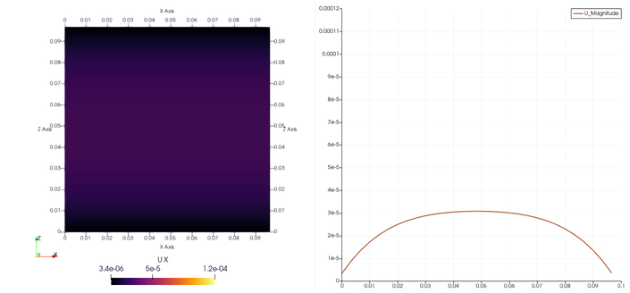
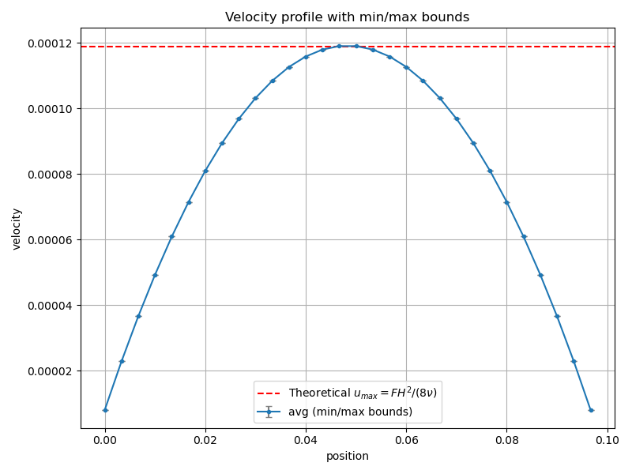
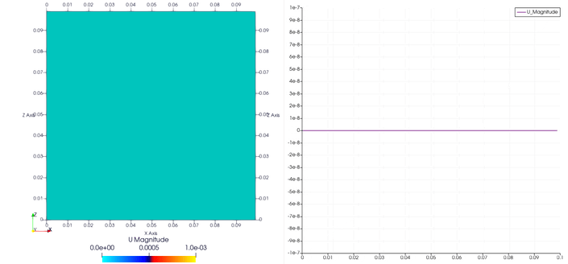
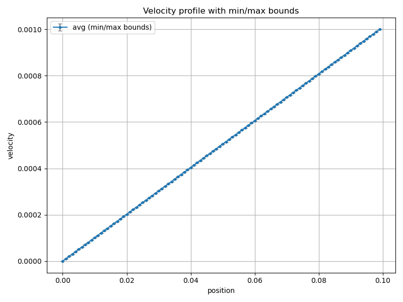
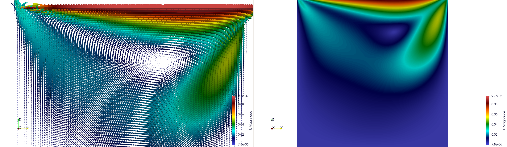
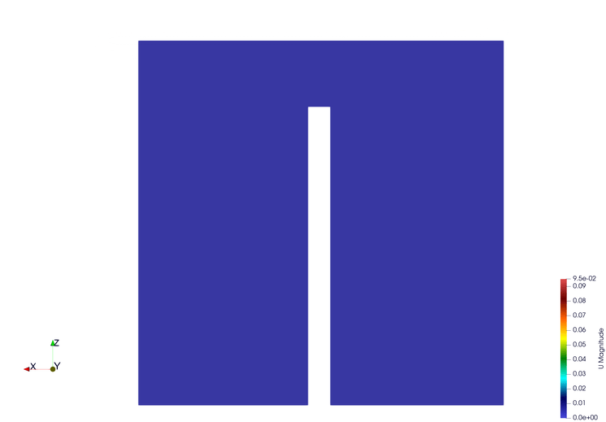
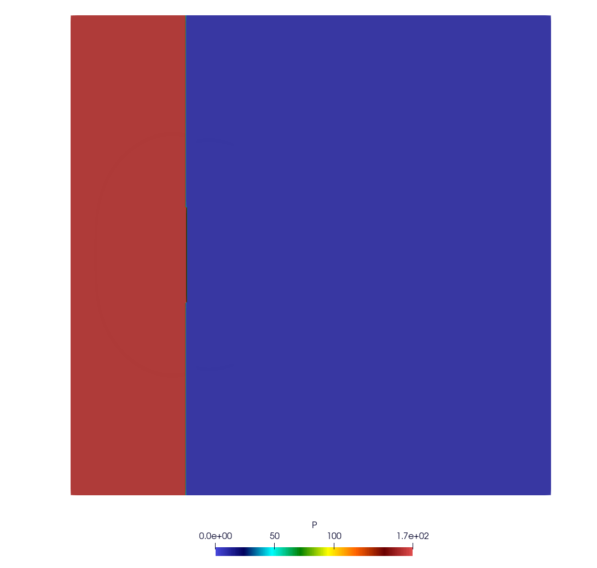

5. Examples
5.1. Poiseuille Flow
We define the simulation domain for the Lattice Boltzmann Method (LBM). In this example, we choose a resolution of 30×30×30. Periodic boundary conditions are applied along the XX and YY axes, while the ZZ axis remains non-periodic.
do_domain:
- domain:
bounds: [ [0,0,0] , [0.1,0.1,0.1] ]
grid_dims: [ 30 , 30 , 30 ]
periodic: [ true, true, false ]
We apply a Neumann boundary condition on both Z boundaries at once, via the regions parameter (setting to (ux = 0, uy = 0, uz = 0)):
boundary_conditions:
- neumann:
U: [0.0,0,0]
regions: [plan_xy_0, plan_xy_l]
An external force of (9.512485×10−5,0.0,0.0) is applied to drive the flow. The kinematic viscosity is set to 1e−3, and the average density is assumed to be 1000.
set_lbm_parameters:
- lbm_parameters:
Fext: [9.512485e-05,0.000000e+00,0.000000e+00]
nuth: 1e-3
The global parameters for this simulation include output frequency and the total number of iterations:
global:
simulation_paraview_freq: 100
simulation_end_iteration: 3000
The expected results should show the development of a fully developed Poiseuille flow profile along the Z axis, with velocity increasing towards the center and decreasing near the boundaries due to the imposed Neumann conditions.

The velocity profile along the Z axis, once the flow is fully developed, is shown below:
{kind=link}

5.2. Couette Flow
We define the simulation domain for the Couette flow using the Lattice Boltzmann Method (LBM). In this case, we set the resolution to 100×100×100, with periodic boundary conditions applied on the XX and YY axes, and non-periodic boundary on the ZZ axis.
do_domain:
- domain:
bounds: [[0,0,0],[0.1,0.1,0.1]]
grid_dims: [ 100 , 100 , 100 ]
periodic: [true, true, false]
We set the Lattice Boltzmann parameters with a kinematic viscosity (nuth) of 1e-2 and no external force applied (i.e., Fext = [0, 0, 0]).
set_lbm_parameters:
- lbm_parameters:
Fext: [0.000000e+00,0.000000e+00,0.000000e+00]
nuth: 1e-2
A Neumann boundary condition is applied on the upper Z boundary (plan_xy_l), with the velocity set to U = [0.001, 0, 0].
boundary_conditions:
- neumann:
U: [0.001,0,0]
regions: [plan_xy_l]
The expected results will show a linear velocity profile along the Z axis, where the velocity increases linearly from the stationary bottom boundary to the top boundary with a constant shear rate, characteristic of Couette flow.

The velocity profile along the Z axis, once the flow is fully developed, is shown below:
{kind=link}

5.3. Cavity Flow
We define the simulation domain for the cavity flow using the Lattice Boltzmann Method (LBM). In this case, the resolution is set to 200×200×200, with non-periodic boundary conditions applied in all directions (XX, YY, and ZZ).
do_domain:
- domain:
bounds: [ [0,0,0] , [0.1,0.1,0.1] ]
grid_dims: [ 200 , 200 , 200 ]
periodic: [ false, false, false ]
We set the Lattice Boltzmann parameters, with no external force applied (i.e., Fext = [0, 0, 0]) and a kinematic viscosity (nuth) of 1e-4.
set_lbm_parameters:
- lbm_parameters:
Fext: [0.000000e+00,0.000000e+00,0.000000e+00]
nuth: 1e-4
The boundary conditions for the simulation are defined as follows:
Pre-streaming boundary conditions: The pre_bounce_back and cavity_z_l conditions are set, with a velocity of U = [0.0, 0.1, 0] applied on the lower Z boundary.
Post-streaming boundary condition: The post_bounce_back condition is applied on the other boundaries.
pre_stream_bcs:
- pre_bounce_back
- cavity_z_l:
U: [0.0, 0.1, 0]
post_stream_bcs:
- post_bounce_back
The expected results will show the development of a cavity flow pattern, where the fluid moves along the Z axis, influenced by the velocity set on the lower boundary. This is typical for cavity simulations, where the fluid is confined within a box.

5.4. Cavity Flow with Wall Obstacle
This example simulates cavity flow using the Lattice Boltzmann Method (LBM) with a fixed obstacle (wall) in the middle of the domain. The domain resolution is 100×100×100, and non-periodic boundary conditions are enforced on all axes (XX, YY, and ZZ).
do_domain:
- domain:
bounds: [ [0,0,0] , [0.1,0.1,0.1] ]
grid_dims: [ 100 , 100 , 100 ]
periodic: [ false, false, false ]
No external force is applied (Fext = [0, 0, 0]), and the kinematic viscosity is set to 1e-4.
set_lbm_parameters:
- lbm_parameters:
Fext: [0.000000e+00,0.000000e+00,0.000000e+00]
nuth: 1e-4
Boundary conditions are applied as follows:
Pre-streaming:
pre_bounce_back applies bounce-back on walls.
cavity_z_l sets a moving lid on the lower Z boundary with velocity U = [0.1, 0.0, 0].
wall_bounce_back enables bounce-back condition for the internal obstacle.
Post-streaming:
post_bounce_back finalizes bounce-back conditions after streaming.
pre_stream_bcs:
- pre_bounce_back
- cavity_z_l:
U: [0.1, 0.0, 0]
- wall_bounce_back
post_stream_bcs:
- post_bounce_back
An internal obstacle is defined using the set_obstacles field. A vertical wall is placed at the center of the domain, slightly offset in the X-direction, spanning from Z = 0 to Z = 0.08.
set_obstacles:
- set_wall:
bounds: [[0.048,0,0],[0.052,0.1,0.08]]
The expected result is a modified cavity flow field with recirculation zones forming around the central wall obstacle, demonstrating how internal structures influence fluid dynamics in confined spaces.

5.5. Lid-Driven Cavity Flow
This example simulates a lid-driven cavity flow using the Lattice Boltzmann Method (LBM). The domain resolution is 100×10×100, with periodic boundary conditions applied along the YY axis, and non-periodic boundaries on the XX and ZZ axes.
do_domain:
- domain:
bounds: [ [0,0,0],[0.1,0.01,0.1] ]
grid_dims: [ 100 , 10 , 100 ]
periodic: [ false, true, false ]
No external force is applied (Fext = [0, 0, 0]), and the kinematic viscosity is set to 1e-1.
set_lbm_parameters:
- lbm_parameters:
Fext: [0,0,0]
nuth: 1e-1
Boundary conditions are applied as follows:
Pre-streaming: pre_bounce_back applies bounce-back on the domain walls.
Post-streaming: post_bounce_back finalizes bounce-back, and lid_driven_cavity enforces a moving lid with velocity U = [0.1, 0.0, 0] on the upper XY plane (plan_xy_l). The lid_driven_cavity operator must be called after the bounce-back step.
pre_stream_bcs:
- pre_bounce_back
post_stream_bcs:
- post_bounce_back
- lid_driven_cavity: ## needs to be called after bounce back
U: [0.1, 0.0, 0]
regions: [plan_xy_l]
The expected result is a recirculating vortex driven by the moving lid at the top of the cavity, characteristic of the classical lid-driven cavity benchmark.
5.6. Pressure-Driven Flow
This simulation demonstrates the effect of a strong pressure or density difference using the Lattice Boltzmann Method (LBM). The domain has a resolution of 100×100×100, with periodic boundary conditions along the Y axis, and closed boundaries in X and Z.
do_domain:
- domain:
bounds: [ [0,0,0] , [0.1,0.1,0.1] ]
grid_dims: [ 100 , 100 , 100 ]
periodic: [ false, true, false ]
No external force is applied. The kinematic viscosity is set to 1e-4.
set_lbm_parameters:
- lbm_parameters:
Fext: [0.000000e+00,0.000000e+00,0.000000e+00]
nuth: 1e-4
The pre-streaming boundary conditions include:
pre_bounce_back: standard no-slip boundary on external walls.
wall_bounce_back: bounce-back for internal structures.
pre_stream_bcs:
- pre_bounce_back
- wall_bounce_back
Two vertical internal walls are added near the center of the domain, one at the top and one at the bottom, leaving a gap in the middle. These walls obstruct flow and create more complex recirculation patterns.
set_obstacles:
- set_wall:
bounds: [[0.048,0,0.06],[0.052,0.1,0.1]]
- set_wall:
bounds: [[0.048,0,0],[0.052,0.1,0.04]]
A high-density region is initialized on the left-hand side using init_distributions with a coefficient of 1.5. This creates a pressure difference between the left and right sides of the domain, acting as the flow-driving mechanism.
set_distributions:
- init_distributions:
tmp_coeff: 1.5
bounds: [[0,0,0], [0.048,1,1]]
The post-streaming boundary condition is the standard post_bounce_back.
post_stream_bcs:
- post_bounce_back
The goal of this setup is to observe how a sharp pressure gradient (from the initialized distribution) drives flow across the domain.

5.7. Pressure-Driven Flow Through Complex Geometry
This simulation demonstrates pressure-driven flow across a complex internal structure using the Lattice Boltzmann Method (LBM). The domain is discretized with a resolution of 400×400×400, offering fine detail of the flow field. Periodic boundary conditions are applied along the Y axis, and the X and Z axes remain non-periodic.
do_domain:
- domain:
bounds: [ [0,0,0] , [0.1,0.1,0.1] ]
grid_dims: [ 400 , 400 , 400 ]
periodic: [false, true, false ]
No external force is applied (Fext = [0,0,0]), and the kinematic viscosity is set to 1e-4.
set_lbm_parameters:
- lbm_parameters:
Fext: [0,0,0]
nuth: 1e-4
Pre-streaming boundary conditions include bounce-back on all walls and user-defined internal walls:
pre_stream_bcs:
- pre_bounce_back
- wall_bounce_back
A complex system of internal obstacles (walls) is defined to create a tortuous path for the flow. These walls are strategically placed along the X axis to create narrow channels and mixing zones.
set_obstacles:
- set_wall:
bounds: [[0.024,0,0.06],[0.026,0.1,0.1]]
- set_wall:
bounds: [[0.024,0,0],[0.026,0.1,0.04]]
- set_wall:
bounds: [[0.034,0,0.025],[0.036,0.1,0.075]]
- set_wall:
bounds: [[0.049,0,0.06],[0.051,0.1,0.1]]
- set_wall:
bounds: [[0.049,0,0],[0.051,0.1,0.04]]
- set_wall:
bounds: [[0.068,0,0.0355],[0.072,0.1,0.065]]
- set_wall:
bounds: [[0.085,0,0.02],[0.1,0.1,0.03]]
- set_wall:
bounds: [[0.085,0,0.07],[0.1,0.1,0.08]]
A high-density initialization is imposed on the far left of the domain using init_distributions with a tmp_coeff of 1.5. This sets up a large pressure difference that drives the fluid flow.
set_distributions:
- init_distributions:
tmp_coeff: 1.5
bounds: [[0,0,0], [0.024,1,1]]
Post-streaming bounce-back is applied to maintain no-slip conditions at the boundaries:
post_stream_bcs:
- post_bounce_back
